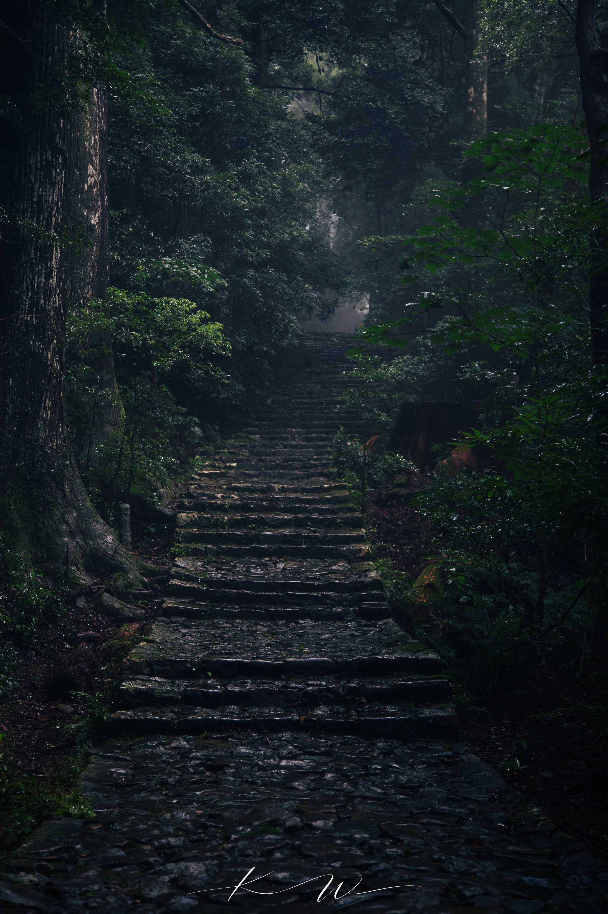

A PERSONAL PHOTO JOURNAL
Beyond Research.
Collections of photographs arranged as small visual journals — more like albums than galleries.

Photographic Journal
Kumano Kodo.
A quiet path through cedar forests, rain-dark stone, moss, and soft mountain light.
All photographs © Kunyang Wang. All rights reserved.